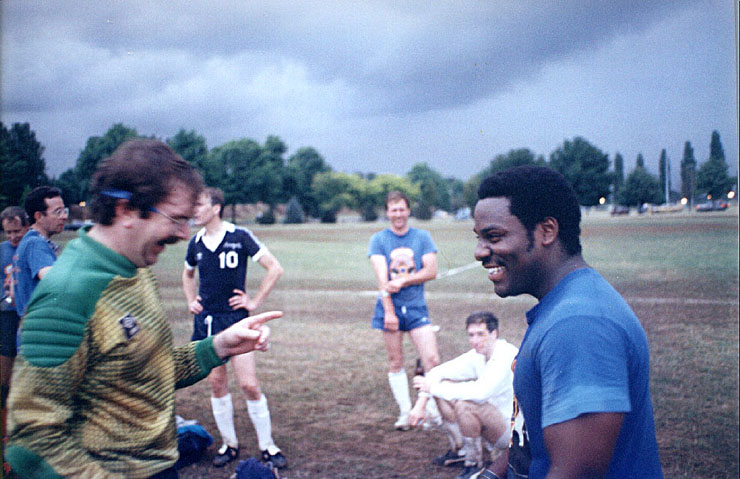
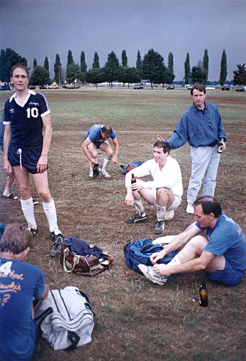
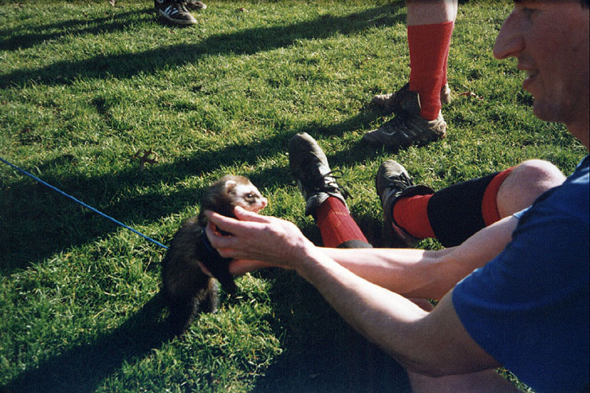
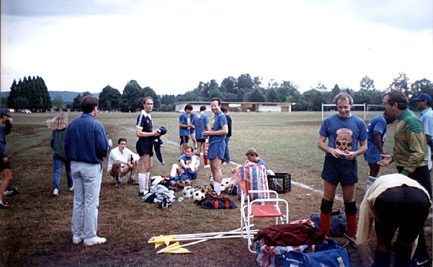
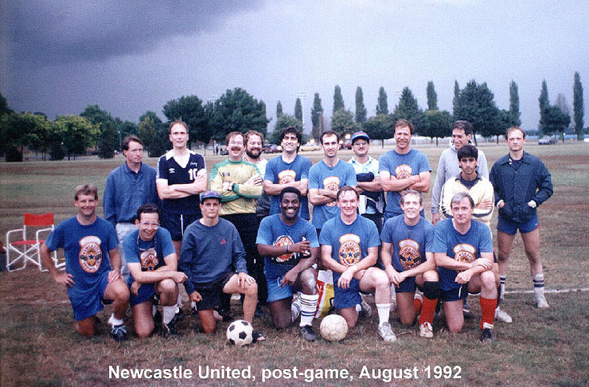

|
Summer League (the summer season for GPSD) is an odd experience. We've played every year since the late 80's - and every year is the same. To say that attendance is erratic is to understate the obvious. One game - 17 players; the next game - 10 trickle in, late. Adjacent divisions are glommed together to field enough teams in a grouping. The top bracket teams see summer league as a time to drop down and relax by humiliating the duffers. A number of managers of mediocre teams unashamedly load up for the summer with players who won't give them a second look in the next fall. Consequently, we almost always have losing summer campaigns. But, hey, you can't comfortably lie on the grass and sip a well-earned brew in February! |
 |
Summer League back in 1992. As an August thunderstorm rolls in, our summer keeper and Anthony Jackson relive the low lights of the just-completed match. |
 |
Jim Brinkman stares wistfully at the camera, probably wondering when he'll get his cheesecloth quality, blue summer jersey. These particular tee shirts were supplied by the American distributor of Newcastle Ale. Mike Calder, on the injured reserve for this game, photo bombs an oblivious player. |
 |
One of our summer replacement keepers raised ferrets as pets and would bring them to the games at Delta Park for an airing. Here, Glenn Fithian-Barrett foolishly places his fingers near the varmint's mouth. |
 |
This particular game was played north of the fieldhouse at Delta Park on one of the four parallel fields. Nowadays, that area is part of Delta's softball field complex. |
 |
Fortunately, the lightening bolts struck far to the east of us. |